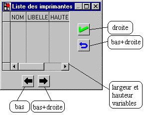
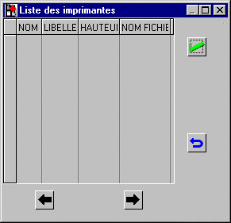

L'attachement des objets permet de déterminer leur comportement lorsque la fenêtre/page qui les contient est agrandie par l'utilisateur.
Les objets peuvent soit :
Rester à la même place et ne pas changer de taille.
Se déplacer proportionnellement à la page/fenêtre.
S'étendre proportionnellement à la page/fenêtre.
C'est le cas typique de l'objet tableau qui peut afficher un plus grand nombre de lignes ou de colonnes en fonction de la taille de la page/fenêtre qui le contient.
Exemple
La fenêtre ci-dessous contient un tableau et des boutons. Les attachements des différents objets sont précisés.

Après agrandissement de la fenêtre, le tableau s'est agrandi et les boutons se sont déplacés :

Comment préciser les attachements des objets ?
Saisissez les attachements d'un objet particulier dans la fenêtre des propriétés de l'objet.
Pour spécifier les attachements de plusieurs objets, sélectionnez d'abord les objets concernés puis opérez de même.
Les propriétés concernant l'attachement des objets sont les suivantes :
|
Attachement droite |
Attaché à droite : spécifie que l'objet est attaché à la droite de la fenêtre/page, c'est à dire qu'il peut éventuellement être déplacé vers la droite en cas d'élargissement de la page/fenêtre. |
|
Attachement bas |
Attaché au bas : spécifie que l'objet est attaché au bas de la page, c'est à dire qu'il peut éventuellement être déplacé vers le bas en cas d'allongement de la page/fenêtre. |
Attention :
Un type d'attachement défini pour une page est automatiquement répercuté à l'exécution à tous les objets contenus dans la page. Par exemple, si vous déclarez qu'une page est "Attachée en bas", tous ses objets auront cette propriété.
Lorsque vous définissez un type d'attachement pour un objet, il est impératif de définir un type d'attachement compatible pour la page contenant cet objet. Dans le cas contraire, une erreur est détectée à la compilation. Par exemple, si vous déclarez qu'un objet est "Attachée en bas", il faut aussi déclarer que la page est de "Hauteur variable" (la page peut aussi être déclarée "Attachée en bas" mais dans ce cas, il est redondant d'affecter cette propriété à l'objet - voir le paragraphe précédent).